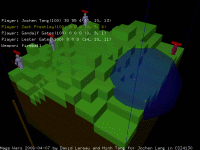

Mage Wars
Game description
Imagine a land of hills and valleys where wizards compete in a deadly spell tournament hurling fireballs and other spells at each other. Featuring turn-based gameplay, hot seat multi-player mode, dynamic terrain generation, custom designed characters and key frame animation. Mage War is a feature-reduced clone of the classic Tank Wars game.
Goals
The primary goal of this project was to pass my Computer Graphics class with it. Therefore, it meant trying out a bunch of graphic related feature. This meant not spending time on complex gameplay or non-graphical feature like sound or network play.
A sad consequence is that there is no option menu for the many commands. You need to use the console to do simple things like changing the number of players, or changing the map dimension.
Screenshots
|  | ||
Inspiration
Inspired from games such as Tank Wars, Scoch Earth, Worms, and even the QBasic demo Gorilla.
Credits
Ming Tang's contribution
Download
Mage Wars
Release Date: 2006-04-07
Keyboard / Mouse Commands
| Input | Description |
| Mouse | move the lookAt point of the camera. |
| Up Arrow | Increase the attack angle. |
| Down Arrow | Decrease the attack angle. |
| Left Arrow | Rotate the avatar counter clockwise. |
| Right Arrow | Rotate the avatar clockwise. |
| Page Up | Increase attack power (longer distance). |
| Page Down | Decrease attack power (shorter distance). |
| A | Pan camera to the left. |
| D | Pan camera to the right. |
| W | Move camera forward. |
| S | Move camera backward. |
| V | Move camera lookAt to origin. |
| 1 | Activate weapon fireball. |
| 2 | Activate weapon cyclone. |
| 3 | Activate weapon Nova. |
| ` | Open console. |
| F | Shows frame rate and triangle count |
| R | Reset the game (generate a new map, restore all players) |
Console commands
Misusing the console may cause unpredicatable results
{kind=link}
{kind=link}
{kind=link}
{kind=link}
{kind=link}
{kind=link}